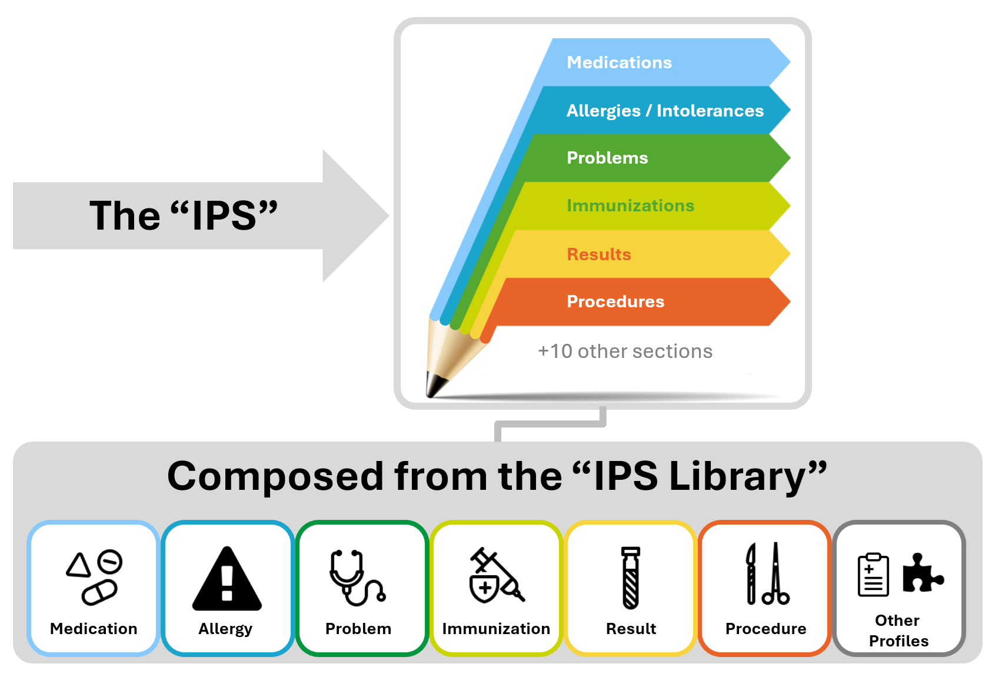
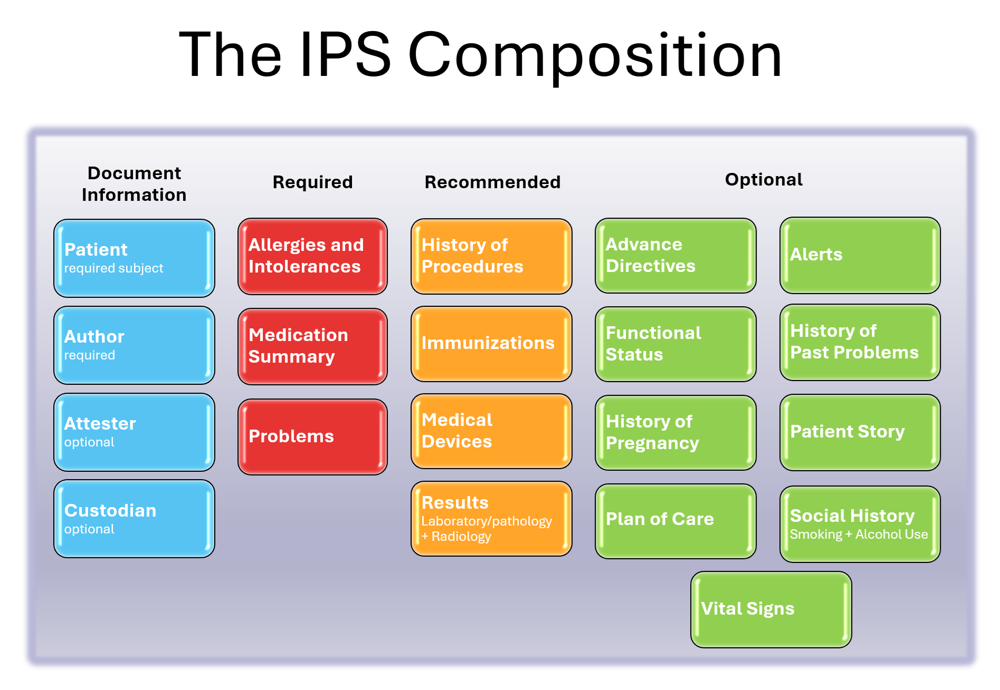

International Patient Summary Implementation Guide
2.0.0-ballot - STU 2 Ballot

International Patient Summary Implementation Guide
2.0.0-ballot - STU 2 Ballot

International Patient Summary Implementation Guide, published by HL7 International / Patient Care. This guide is not an authorized publication; it is the continuous build for version 2.0.0-ballot built by the FHIR (HL7® FHIR® Standard) CI Build. This version is based on the current content of https://github.com/ritikarawlani/fhir-ips and changes regularly. See the Directory of published versions
| Official URL: http://hl7.org/fhir/uv/ips/ImplementationGuide/hl7.fhir.uv.ips | Version: 2.0.0-ballot | |||
| IG Standards status: Trial-use | Maturity Level: 2 | Computable Name: InternationalPatientSummaryIG | ||
An International Patient Summary (IPS) document is an electronic health record extract containing essential healthcare information about a subject of care. As specified in EN 17269 and ISO 27269, it is designed for supporting the use case scenario for ‘unplanned, cross border care’, but it is not limited to it. It is intended to be international, i.e., to provide generic solutions for global application beyond a particular region or country.
The IPS dataset is minimal and non-exhaustive; specialty-agnostic and condition-independent; but still clinically relevant.
The IPS document is composed by a set of robust, well-defined and potentially reusable sets of core data items (indicated as IPS library in the figure below). The tight focus of the IPS on unplanned care is in this case not a limitation, but, on the contrary, facilitates their potential re-use beyond the IPS scope.
Figure 1: The IPS product and by-products

The goal of this Implementation Guide is to specify how to represent in HL7 FHIR the International Patient Summary (IPS). An alternative representation as templated HL7 CDA R2 is also provided ( see the hl7.org site or the ART DECOR repository). The initial focus of the International Patient Summary (IPS) was the unplanned care across national borders. This specification can be used and be useful also in local applications and be supportive of planned care.
Details on the project background are available in the IPS Website.
As specified in EN 17269 and ISO 27269, the IPS dataset is a “minimal, non-exhaustive set of data elements required for the international patient summary”. A Patient Summary is defined by ISO/TR 12773-1:2009 as a “Health record extract comprising a standardized collection of clinical and contextual information (retrospective, concurrent, prospective) that provides a snapshot in time of a subject of care’s health information and healthcare.”
‘Minimal’ reflects the ideas of ‘summary’ and the need to be concise, but also alludes to the existence of a core set of data elements that all health care professionals can use; it is intended to be a speciality agnostic and condition independent set. It does not imply that all the items in the data set will be used in every summary. It is also possible to refine the extract from a record such that the content of the summary is more relevant to a particular condition (e.g. asthma) but no asthma-specific elements will be specified in this standard. The IPS Document or IPS can be extended by non-IPS standard condition-specific data. ‘Non-exhaustive’ recognizes that the ideal data set is not closed, and is likely to be extended, not just in terms of requirement evolution, but also pragmatically in instances of use. [EN 17269; ISO 27269].
Furthermore the scope of the IPS is global. Although this is a major challenge, this implementation guide takes various experiences and newer developments (e.g. US Core Implementation Guide (FHIR IG)) into account to address, as far as possible, global feasibility.
The following picture provides an overview of the current IPS content.
Figure 2: The IPS composition

Further details on the IPS project relationships with other projects and guidelines are available in the IPS Website.
This Implementation Guide has been balloted as STU with the intention to go normative in a subsequent ballot cycle.
| IG | Package | FHIR | Comment |
|---|---|---|---|
  International Patient Summary Implementation Guide International Patient Summary Implementation Guide | hl7.fhir.uv.ips#2.0.0-ballot | R4 | |
 HL7 Terminology (THO) HL7 Terminology (THO) | hl7.terminology.r4#6.0.2 | R4 | Automatically added as a dependency - all IGs depend on HL7 Terminology |
 FHIR Extensions Pack FHIR Extensions Pack | hl7.fhir.uv.extensions.r4#5.1.0 | R4 | Automatically added as a dependency - all IGs depend on the HL7 Extension Pack |
Package hl7.fhir.uv.extensions.r4#5.1.0 This IG defines the global extensions - the ones defined for everyone. These extensions are always in scope wherever FHIR is being used (built Sat, Apr 27, 2024 18:39+1000+10:00) |
This is an R4 IG. None of the features it uses are changed in R4B, so it can be used as is with R4B systems. Packages for both R4 (hl7.fhir.uv.ips.r4) and R4B (hl7.fhir.uv.ips.r4b) are available.
There are no Global profiles defined
| Role | Name | Organization | Contact |
|---|---|---|---|
| Primary Editor | Rob Hausam | Hausam Consulting LLC | rob@hausamconsulting.com |
| Primary Editor | John D’Amore | More Informatics | johnd@moreinformatics.com |
| Primary Editor | Giorgio Cangioli | Consultant, HL7 Italy | giorgio.cangioli@gmail.com |
| Contributor | Catherine Chronaki | HL7 International Foundation | chronaki@gmail.com |
| Contributor | Dr Christof Geßner | Gematik | christof.gessner@gematik.de |
| Contributor | François Macary | Phast | francois.macary@phast.fr |
| Contributor | Gary Dickinson | CentriHealth | gary.dickinson@ehr-standards.com |
| Contributor | George Dixon | Allscripts | george.dixon@allscripts.com |
| Contributor | John Moerhke | By Light Professional IT Services | John.Moehrke@bylight.com |
| Contributor | Dr Kai U. Heitmann | Heitmann Consulting and Services, ART-DECOR Open Tools GmbH, HL7 Germany | info@kheitmann.de |
| Contributor | Kenneth Sinn | Ontario Health Digital Services | ken.sinn@ontariohealth.ca |
| Contributor | Sheridan Cook | Accenture | sheridan.cook@accenture.com |
IG © 2020+ HL7 International / Patient Care. Package hl7.fhir.uv.ips#2.0.0-ballot based on FHIR 4.0.1. Generated 2024-07-31
Links: Table of Contents |
QA Report
| Version History |
 |
Propose a change
|
Propose a change